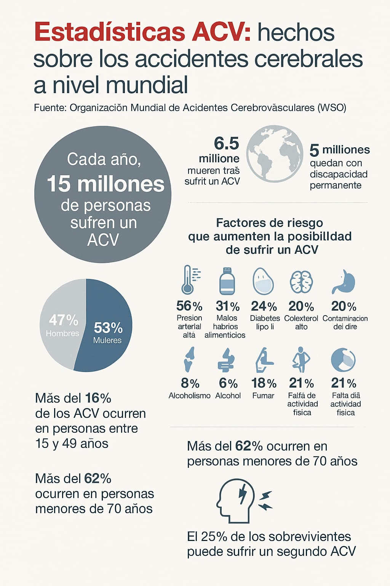
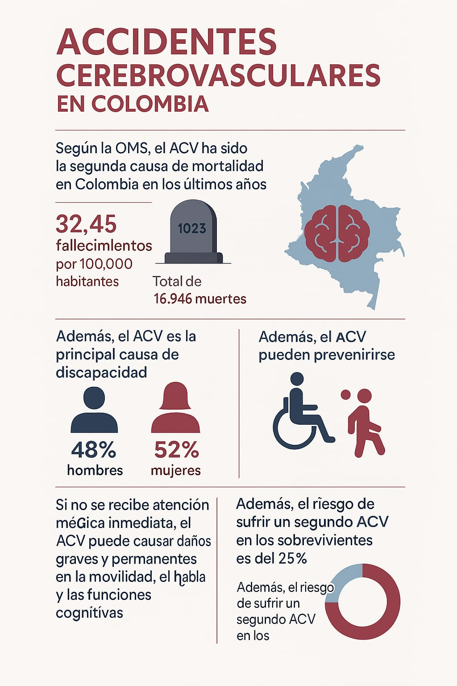
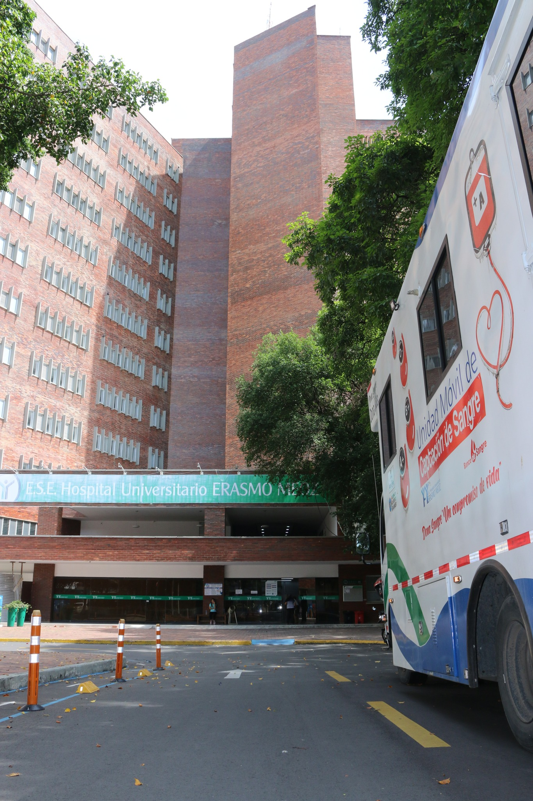

Introducción

El accidente cerebrovascular (ACV) es una de las principales causas de morbimortalidad en el mundo. Aunque históricamente se ha asociado con personas mayores, en las últimas décadas se ha observado un aumento alarmante en su incidencia en adultos jóvenes (18 a 45 años). Este cambio epidemiológico ha despertado un creciente interés en la comunidad médica y científica por identificar los factores de riesgo específicos en esta población de adultos jóvenes de tener un ACV.
En Cúcuta, Colombia, los casos de ACV en adultos jóvenes representan un desafío no solo médico, sino también social y económico, debido a su impacto en la calidad de vida de los pacientes y en los elevados costos del tratamiento y la rehabilitación de la persona. El Hospital Universitario Erasmo Meoz, uno de los principales centros de salud de la región, ha atendido un número considerable de casos de ACV.
Información de la Investigación
Esta investigación tiene como propósito identificar los principales factores de riesgo asociados al desarrollo de accidentes cerebrovasculares en adultos jóvenes atendidos en el Hospital Universitario Erasmo Meoz durante el periodo 2025. Para ello, se analizarán tanto factores tradicionales como hipertensión, diabetes, dislipidemia, obesidad, sedentarismo, consumo de tabaco y alcohol, como otros menos frecuentes, tales como trastornos autoinmunes y alteraciones en la coagulación. Los resultados permitirán establecer estrategias preventivas y de intervención temprana dirigidas a esta población


Planteamiento del Problema

ACV. Cuando se habla de ACV se asocia primeramente e exclusivamente de los adultos mayores; sin embargo con el paso del tiempo especialmente en las últimas décadas se a evidenciado un incremento en la aparición en comunidades más jóvenes que lo normal, este panorama ha generado una intensa preocupación por la comunidad médica y científica (Putaala et al, 2009). Investigaciones han determinado que algunos de los factores de riesgo que tienen una gran influencia en la aparición de la enfermedad son la hipertensión arterial, diabetes mellitus, dislipidemia, obesidad, sedentarismo, tabaquismo, consumo de alcohol y drogas, antecedentes familiares y enfermedades cardiovasculares preexistentes (O'Donnell MJ, Chin SL, Rangarajan S, Xavier D, et al, 2016) - (Ekker MS, Boot EM, Singhal AB, Tan KS, et al., 2018).
Teniendo en cuenta factores menos comunes como lo podrían llegar a ser: algunos trastornos autoinmunes, ciertas infecciones y alteraciones en la coagulación del paciente, los cuales pueden desarrollar un papel muy importante en la aparición de esta enfermedad (Guo Y, Li J, Li W, Zhang Y, et al, 2016). En Cúcuta, Colombia; no hay muchos estudios actuales que se encarguen de investigar los distintos factores de riesgo que podrían llegar a causar enfermedades cardio cerebrovasculares entre ellas el ACV. En el Hospital HUEM se han llegado a tender muchos casos de enfermedades cardio cerebrovasculares lo que apoya la idea de la necesidad de este análisis para así poder llevar a cabo estrategias de prevención y control de estas enfermedades como el ACV.
Internacional
Nacional
Formulación del Problema
¿Cuáles son los factores de riesgo asociados a la ocurrencia de accidentes cerebrovasculares en adultos jóvenes (18 a 45 años) atendidos en el Hospital Universitario Erasmo Meoz de la ciudad de Cúcuta durante el período 2025?
Objetivos

Objetivo General
Determinar los factores de riesgo asociados a los accidentes cerebrovasculares en adultos jóvenes (18 a 45 años) atendidos en el Hospital Universitario Erasmo Meoz de la ciudad de Cúcuta durante el período 2025.
Objetivos Especificos
- Identificar la prevalencia de los principales factores de riesgo cerebrovasculares en adultos jóvenes atendidos en el hospital Universitario Erasmo Meoz de Cúcuta.
- Determinar la relación entre factores de riesgo modificables (hipertensión, obesidad, diabetes, tabaquismo, entre otros) y la incidencia de ACV en adultos jóvenes.
- Evaluar la influencia de factores genéticos y enfermedades ya preexistentes en los adultos jóvenes con ACV.
Justificación de la Investigación

La elevada cifra de incidencia en los ACV en adultos jóvenes en los últimos años manifiesta un desafío para el sistema de salud, esto se debe a su impacto en la calidad de vida de los pacientes junto con sus consecuencias socioeconómicas originadas por la discapacidad y sus costos en tratamientos a largo plazo que provoca (Sacco RL, Kasner SE, Broderick JP, Caplan LR, et al, 2013). Múltiples factores de riesgo asociados al ACV se han establecido por medio de múltiples investigaciones por parte de países desarrollados en sus poblaciones, por ello se considera necesario y fundamental realizar estas mismas investigaciones en el contexto local con la intención de entender de mejor manera los patrones epidemiológicos de esta enfermedad en Cúcuta.
Este estudio permitirá conseguir la información necesaria para el reconocimiento de los distintos factores de riesgo que son presentados por la población de adultos jóvenes con ACV; el cómo varían y cuando están presentes, lo cual ayudará a poder avanzar en los procesos de atención primaria del ACV en adultos jóvenes. de igual manera, El modo en el que los resultados de esta investigación podrán ser de gran ayuda para el desarrollo de las áreas de investigaciones y de políticas de salud pública, las cuales están enfocadas en conllevar los resultados de esta enfermedad a nivel de la población.
Delimitación del Problema

Tiempo
El estudio abarcará el período del 2025.
Espacio
La investigación se realizará en el Hospital Universitario Erasmo Meoz, ubicado en la ciudad de Cúcuta, Colombia.
Población
Se incluirán pacientes de entre 18 y 45 años atendidos en la institución con diagnóstico confirmado de ACV o con factores de riesgo predisponentes.
Temática
Se centrará en la identificación y análisis de los factores de riesgo asociados al ACV en adultos jóvenes, excluyendo otras patologías neurológicas sin relación directa con el evento cerebrovascular.

Referencias
- Feigin VL, Stark BA, Johnson CO, Roth GA, et al. Global, regional, and national burden of stroke and its risk factors, 1990–2019: a systematic analysis. Lancet Neurol. 2021;20(10):795-820 https://pubmed.ncbi.nlm.nih.gov/34487721/
- Putaala J, Metso AJ, Metso TM, Konkola N, et al. Analysis of 1008 consecutive patients aged 15 to 49 with first-ever ischemic stroke: the Helsinki young stroke registry. Stroke. 2009;40(4):1195-1203.https://pubmed.ncbi.nlm.nih.gov/19246709/
- O'Donnell MJ, Chin SL, Rangarajan S, Xavier D, et al. Global and regional effects of potentially modifiable risk factors associated with acute stroke in 32 countries (INTERSTROKE): a case-control study. Lancet. 2016;388(10046):761-775.https://pubmed.ncbi.nlm.nih.gov/27431356/
- Ekker MS, Boot EM, Singhal AB, Tan KS, et al. Epidemiology, aetiology, and management of ischaemic stroke in young adults. Lancet Neurol. 2018;17(9):790- 801.https://pubmed.ncbi.nlm.nih.gov/30072187/
- Guo Y, Li J, Li W, Zhang Y, et al. Clinical features and risk factors of cryptogenic stroke in Young adults. BMC Neurology.https://pubmed.ncbi.nlm.nih.gov/35172762/